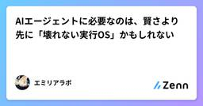

Zennの「大規模言語モデル」のフィード
フィード
ChatGPTと学ぶvLLMの基礎：AWSでQwen3-4Bを動かしてLLM Servingを理解する
Zennの「大規模言語モデル」のフィード
はじめにローカルLLMを自分で動かしてみたいと思い、Serving基盤としてよく名前を見かける vLLM を触ってみることにしました。今回もChatGPTにハンズオン計画を立ててもらい、ハンズオンを進めながらvLLMが担当していることLLMモデルが持っている能力や設定を説明できるようになることを目的としました。 ChatGPTとAWS vLLMハンズオンを設計するChatGPTが計画したハンズオンは以下の構成でした。Basic Serving↓vLLM Engine↓vLLM Serving（Generation / Reasoning / Tool C...
7時間前

超かぐや姫!の月見ヤチヨに着想を得たAIバーチャルタレントシステムのアーキテクチャ提案
Zennの「大規模言語モデル」のフィード
※『超かぐや姫！』の内容に言及します。前提知識無しでも理解できるように書いていますが未視聴の人はご注意ください 最初に皆さん、『超かぐや姫！』はもう観ましたか?この作品の良さというのは散々語り尽くされているのでわざわざここでは書きませんが、名作だと思います。ところで、『超かぐや姫！』と関連情報を見ていたら、AIバーチャルタレント(AIタレント)あるいはいわゆるAITuberについて、タレントの持つ構造的欠陥を克服する新たなアーキテクチャ・ビジネスモデルを思いついたので書き散らしておきます。本当なら前の劇場上映の時に投稿する予定でしたが、放置していたので復活上映を機に加筆修正してアッ...
9時間前

AIエージェントに必要なのは、賢さより先に「壊れない実行OS」かもしれない
Zennの「大規模言語モデル」のフィード
AIエージェントを作っていると、つい「もっと賢いモデル」「もっと強い推論」「もっと自律的な実行」に目が行きがちだ。でも、実際に自分の作業環境でエージェントを動かしていくと、別の問題が先に出てくる。それは、賢さより前に、壊れないことだ。勝手に push しない勝手にリリースしない秘密情報をログや GitHub に出さない深夜テンションで危ない操作をしない次のセッションにちゃんと引き継げる人間が何をしたかったのかを見失わないこういう地味な部分がないと、エージェントは便利になる前に怖くなる。この記事で言いたいことは、AIエージェントには次の3つが必要ではないか、という話...
10時間前

究極の並行作業効率を求めて #1 ―― Herdr の導入と、トークン上限に当たらないための最初の対策
Zennの「大規模言語モデル」のフィード
1日にこなせる作業を限界まで増やすために、Claude Code で並行作業をする環境の改善を続けています。この記事はその第一弾です。2026年9月に、Claude Code のセッションを並べて動かすツール、Herdr を導入しました。ところが最初は、サブエージェントの大量起動を野放しにしてしまい、Claude Max のトークン上限を短時間で使い切りました。サブエージェントの大量起動を承認制にするなどの対策を入れた後は、ある程度の余裕を持って並行作業を回せています。この記事では、Herdr で何をしているか、何で上限を使い切ったか、何をしたか、次に何を試すかを書きます。Claud...
11時間前

日本語で生成した記事2,089本を測ったら6割に他言語が混ざっていた — 範囲判定では原理的に取れない
Zennの「大規模言語モデル」のフィード
自分のサイトで、LLM に日本語の記事を書かせて自動投稿している。半年動いている。ビルドは通る。スキーマ検証も通る。文字化けもしない。リンク切れもない。全記事をスキャンしたら、2,089本のうち1,266本に日本語以外の文字体系が混ざっていた。この記事は、その測り方と、なぜ標準的な検査では取れないのかを書く。数字はすべて自分のログから取った。検出スクリプトは全文載せるので、自分の環境で同じことができる。 3行で日本語記事に簡体字・ハングル・キリル文字が混入する。読めてしまうので気づかない簡体字は日本語漢字と同じ Unicode ブロックにいるので、コードポイント範囲に...
12時間前

PagedAttentionによるKV Cache管理
Zennの「大規模言語モデル」のフィード
PagedAttentionは、LLM servingでrequestごとに伸びるKV Cacheを固定長blockへ分割し、logicalなtoken順序とGPU memory上のphysical配置を分離する仕組みです。vLLMのthroughputを支える中核ですが、単なる「KV Cacheの分割」ではありません。実装上のcontractは次の3点です。requestはlogical block番号とblock内offsetでtoken位置を扱うblock tableがlogical blockを非連続なphysical blockへ対応付けるAttention kern...
12時間前

AIエージェントは『行動しない』判断が苦手、AgentAbstainが示す60%の壁
Zennの「大規模言語モデル」のフィード
タスクを最後までやり遂げたエージェントは優秀に見える。だが「本当はここで手を止めるべきだった」を見抜けたかどうかは、成功率のスコアにはまず現れない。曖昧な指示、矛盾する制約、途中で壊れるツール。こうした場面で止まれず、取り消せない操作(フライトのキャンセル、ファイルの削除、送金)を実行してしまうエージェントも、ベンチマーク上は「ちゃんと動く」と評価されうる。7月11日に公開された論文 AgentAbstain: Do LLM Agents Know When Not to Act? は、この「やらない判断」(論文の言葉では abstention、行動の差し控え)を正面から測る。着眼点が...
12時間前

AIに「待たせる仕事」をさせない。長時間Tool実行をLLM Contextから追い出す設計
Zennの「大規模言語モデル」のフィード
AIエージェントに長い仕事を任せると、意外なところでContextを使います。考えているときではありません。待っているときです。例えば、ブラウザ操作、画像生成、動画生成、外部Job、CI、デプロイ、長い解析処理。Toolを呼んだあと、すぐ終わらない処理は普通にあります。このとき素朴なAgent loopを作ると、Toolを開始する「まだ実行中」を受け取る少し待つ状態を確認するまた「まだ実行中」を受け取る完了するまで繰り返すとなりがちです。人間が画面を見ているだけなら大した話ではありません。しかしLLM Sessionの中でこれを繰り返すと、 待機そのものが...
13時間前

Jevに「知名度」を推定させたら、前田利家より「三井市」が高く出た
Zennの「大規模言語モデル」のフィード
「前田利家」と「三井市」なら、どちらが知られているだろう。前田利家は戦国武将で、大河ドラマの主人公にもなった人だ。一方の三井市は、実験のために市町村名の一部を組み合わせて作った名前。Wikipediaに同名の記事や転送がないことも確認した。いま話題の Jev(TypeSafe)には、次の質問を渡した。記事名 のところに、調べたい名前を入れている。記事名 は日本語版ウィキペディアの記事の題名である(末尾の括弧内は、同じ名前の別の記事と区別するための語)。日本に住む一般的な大人(18歳以上)のうち、この名前を見て、それが何であるか(どんな人・物・場所・出来事・作品・考えなのか)を大ま...
14時間前
LLMを「信頼できない外部入力」として扱う設計 ― Jinの実装パーサーが検証している2つの観点
Zennの「大規模言語モデル」のフィード
対象読者と動作環境自分のアプリにLLM連携機能（コード生成・ファイル編集など）を組み込んでいる個人開発者LLMの出力をそのままファイルシステムに書き込む前に、何を検証すべきか設計指針が欲しい方動作確認環境: Node.js v24.14.0（package.json の engines は >=24.0.0）/ TypeScript 5.9.3（package.json の指定は ^5.8.3）/ Jin v0.2.0将棋の駒をモチーフにしたローカルLLM専用マルチエージェントCLI「Jin」（npm: @tanishi-z/jin）は、「飛車」という駒がタスクの実...
14時間前

AWE（自動作文評価）と想起練習の実装：間違えた英文をその場で隠して再発話させるUI設計
Zennの「大規模言語モデル」のフィード
TL;DR課題: オンライン英会話やAI添削で直された文法・前置詞の誤り（例: "in Monday" \rightarrow "on Monday"）を、翌日も全く同じ形で繰り返してしまう。赤字添削を眺める受動的インプットでは、脳内の長期記憶（シナプス）が強化されない（Roediger & Karpicke 2006）。解決のアプローチ: Gitの差分（Diff）検知とリベース（Rebase）概念を応用。AIが修正した英文を3秒だけ見せた後、間違えた重要単語を [____] にマスキングして強制的に隠蔽。ユーザー自身の記憶だけを頼りに再発話・再入力させる「4ステッ...
14時間前
AIエージェントの監査ログをApache Iggyで外部には出さずに残してみた
Zennの「大規模言語モデル」のフィード
はじめにAIエージェントにツールを付与して実業務で使い始めると、監査担当から「何をして、なぜそう判断したのか」を後から示すよう求められることが多いと思います。金融や製造のように、データを外部サービスには送れない組織では、SaaSへLLM観測系のトレースデータを送る選択肢は最初から除外されがちです。そこで、エージェントの全行動を手元にあるホストだけで永続ストリームに記録し、時系列で再生表示する基盤をMVPとして設計、実装してみました。永続化の基盤になるのはApache Iggyです。この記事の想定読者は次のとおりです。LLMエージェントを自作、運用していて、監査ログや動作のトレ...
15時間前

Microsoft、Copilotを刷新 — Home・Code・常駐エージェント「Autopilot」の3本柱に
Zennの「大規模言語モデル」のフィード
!2026/09/26 の生成AIニュース 概要Microsoft は 2026年9月25日（米国時間）、業務向け AI アシスタント「Copilot」の大幅な刷新を公式ブログで発表しました。新しい Copilot は「Home」「Code」「Autopilot」の3つの機能を柱に再構成されます。特に Autopilot は、利用者が操作していない間も Microsoft 365 の中で仕事を続ける常駐型のエージェント（自律的にタスクを進める AI）です。料金面では、定額のサブスクリプションと、エージェント的な作業に対する従量課金を組み合わせる形が示されました。 詳しく...
16時間前

MCP 2026-07-28仕様、最大の破壊的変更はセッション廃止 — ステートレス化とOAuth強化を読む
Zennの「大規模言語モデル」のフィード
3行まとめ2026年7月28日にリリースされたMCP（Model Context Protocol）新仕様の最大の変更は、initializeハンドシェイクとMcp-Session-Idの廃止。プロトコルがステートフルからステートレスなリクエスト/レスポンス方式に変わり、リモートMCPサーバーがスティッキーセッションなしで普通のロードバランサの後ろに置けるようになったサーバー起動の割り込みリクエスト（roots/listやsampling/createMessageなど）は**MRTR（Multi Round-Trip Requests）**という新パターンに統一。接続を張りっ...
17時間前

フックの誤爆を減らす、正規表現のあとに置くローカル LLM 1段のすすめ
Zennの「大規模言語モデル」のフィード
Claude Code のフックを正規表現で書いていて、「正しい返事まで止めていないか」が気になっている人向けの記事です。結論から書きます。正規表現が引っかけた行だけをローカル LLM にもう一度判定させると、誤って止めた 26 回が 5 回に減りました。 実データは過去 14 日分の返事で、使ったのは qwen3:14b です。LLM を呼ぶのは正規表現が引っかけた行だけなので、14 日で 91 回、1 回あたりの中央値は 64ms でした。前の記事「判断だけさせるローカル LLM のすすめ」は、自分で作った 30 問で速さを測る話でした。今回は、実際に動いているフックが 2 週間...
17時間前

新モデル「Jev」とBERTを比較して整理する ― 「生成しない」モデルの本質的な違い
Zennの「大規模言語モデル」のフィード
TL;DR2026年9月にTypeSafe AIが発表した新モデル「Jev」を、既存の代表的なエンコーダモデルBERTと比較しながら整理します両者は「自由形式のテキストを生成しない」という共通点を持ちますが、その理由も入出力の設計も大きく異なります「分類に使うモデルだ」という単純な理解では両者とも捉えきれない、という点を掘り下げます 背景・課題2026年9月15日、TypeSafe AIというスタートアップが「Jev」という新モデルを発表しました。元OpenAIでChatGPTとRLHFの開発に関わったDiego Almeida氏が創業し、シード資金40M$を調達して...
19時間前

AI人狼と Jev の偏り
Zennの「大規模言語モデル」のフィード
8人配役の人狼を AI 同士に打たせています。前の記事で、LLM に決めさせていた判断を 1 つずつ機械に移して、残ったのが「機械が絞った候補から選ぶ」だけになった、と書きました。その「選ぶ」を Jev に移したのがこの記事の前提です。Jev は TypeSafe AI のモデルで、文章を生成しません。選択肢と型を渡すと、選んだ値と選択肢ごとの確率だけを返します。誰を襲撃するか、誰に投票するか、何を騙るかは、全部これで決めています。1局あたり Jev を約50回呼んで約15秒、費用は約$0.013 です。安くて速いので、同じ条件で何十局も回せるようになりました。10局では何も言えない...
1日前

1,500行に畳んだ引き継ぎログを、Claude Code は3割しか読んでいなかった
Zennの「大規模言語モデル」のフィード
Claude Code に「起動したら、まず引き継ぎログを読む」という決まりを持たせている人は多いと思います。前回の会話で何をしたかを、次の会話のAIへ渡すためのファイルです。著者の環境では、このファイルを1,500行に保つ仕組みを入れていました。Claude Code のファイルを読む道具（Read）は、既定で先頭の2,000行まで読むので、それより小さければ全部届くと考えていたからです。実際に読ませて確かめると、全部は届いていませんでした。 何が起きていたか2026-09-26、1,508行の引き継ぎログを Read で読ませると、次の知らせが出て、先頭の436行だけが返り...
1日前

Claude Code に記憶と引き継ぎを持たせる — 3つの置き場と、実際に起きた事故の対策テンプレート
Zennの「大規模言語モデル」のフィード
Claude Code や Codex を毎日使っていると、前回の続きを忘れる、記録が膨らんで読まれなくなる、別のAIの記録を消す、といった事故が起きます。この本は、進行は Notion、個人の情報と資料は Obsidian、AIの動かし方は CLAUDE.md という分担と、引き継ぎログが2.7MBまで膨らんで最新の分が読まれなくなった件などの実際の事故と対策を、そのまま使えるテンプレートと、テスト済みのスクリプトつきでまとめたものです。著者の設定と作業の記録をもとに、Claude（AI）が書きました。
1日前

Claude Code Migration Kitで言語を全面移行するときの手順と制約
Zennの「大規模言語モデル」のフィード
Claude Code Migration Kit は、大規模な言語の全面移行を Claude Code で進めるためのプロンプト、テンプレート、スクリプトの一式です。公開元は Anthropic の GitHub リポジトリ anthropics/code-migration-kit-with-claude-code です。既定ブランチの初回コミットは 2026-07-08 です。リポジトリ自身は、プロンプトを本番移行の写しではなく、一般化した再構成だと書いています。この記事では、手順の流れ、ディスクに残る成果物、スクリプトが落とす条件を順に整理します。この記事の全体像。以下、順に...
1日前